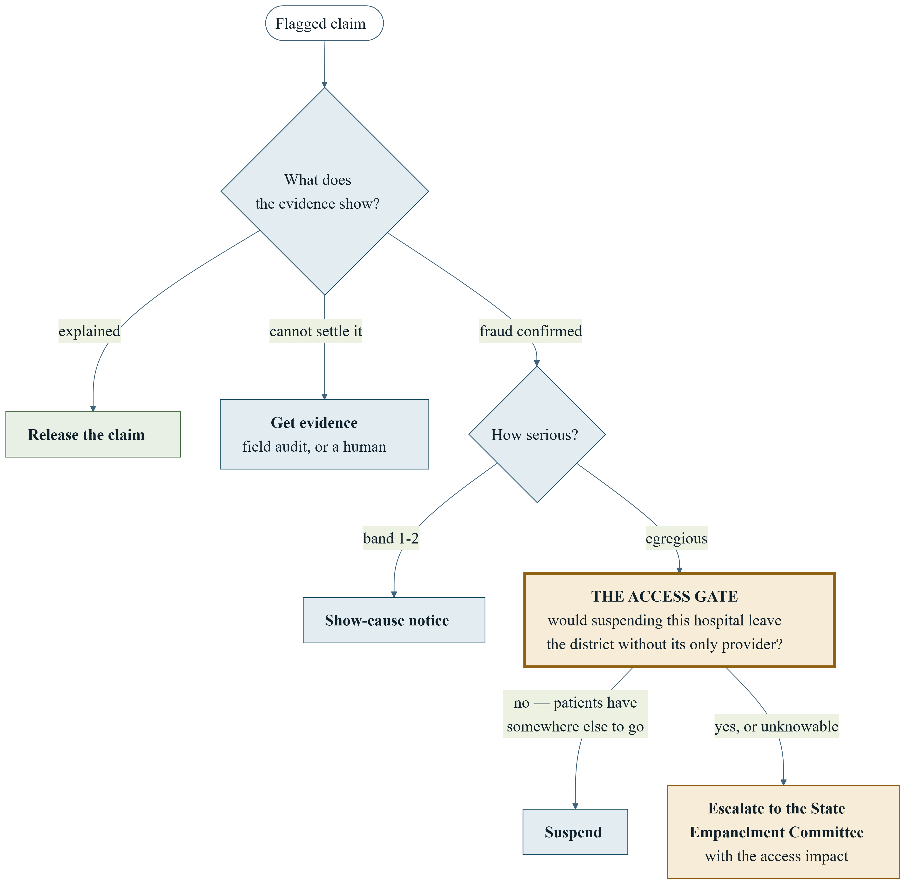
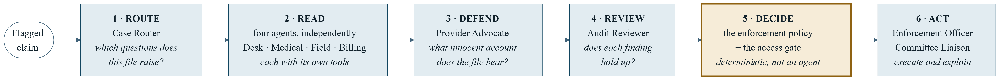
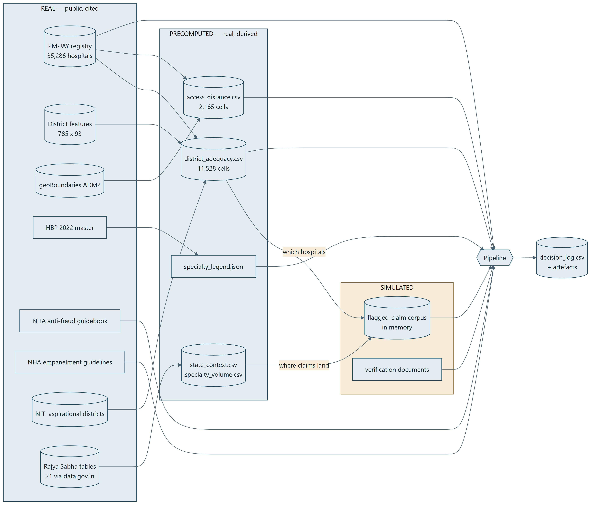
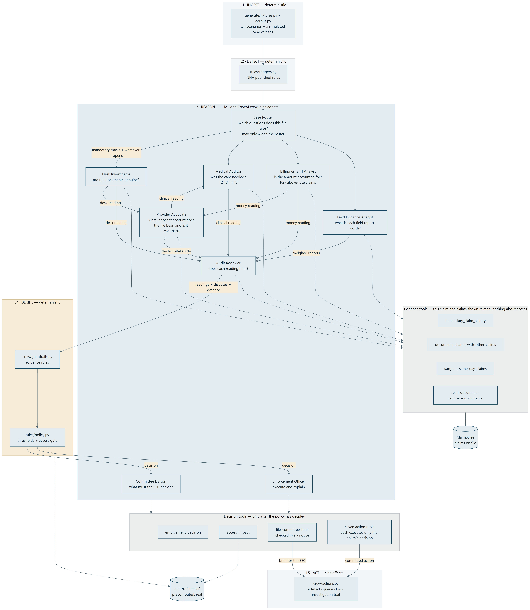
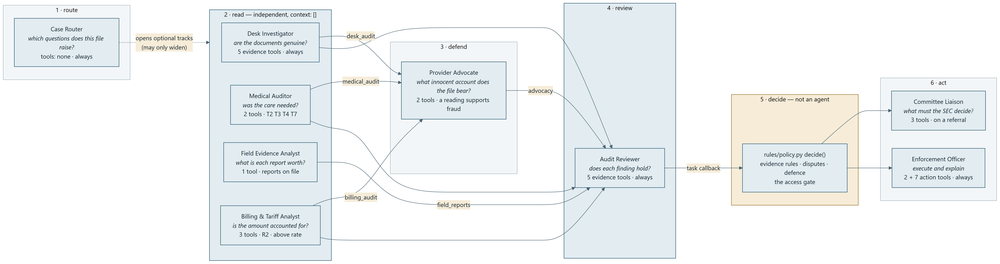
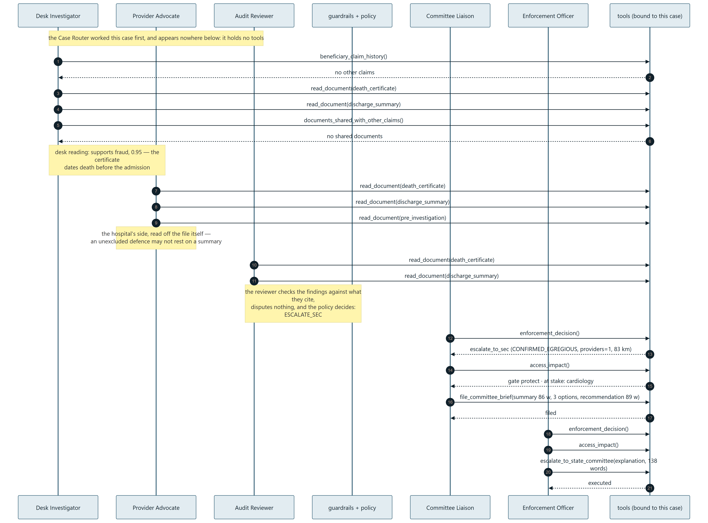

The Access Gate
India's PM-JAY fraud system already decides whether a hospital cheated. It never asks who loses care if we shut it down. In 19.1% of district × specialty cells, the accused hospital is the only provider there is. This is an agent crew that investigates the flag, acts on it — and stops at the one question nobody currently asks.
The problem
A State Health Agency must decide, thousands of times a year, what to do about a hospital its automated system has flagged for claim fraud — without knowing whether that hospital is the only place in its district that performs the procedure in question.
The scheme
Ayushman Bharat PM-JAY gives India's poorest families ₹5 lakh a year of cashless secondary and tertiary cover through roughly 35,286 empanelled hospitals across 725 district cells and 38 states and union territories. States run it in trust mode, insurance mode, or a hybrid. Delhi, Odisha and West Bengal have not implemented it — which is why they are excluded from every network figure in this document rather than counted as zero.
What the triggers actually detect
Detection is not our contribution. These are NHA's published rules, transcribed into
rules/triggers.py. Severity band 1 is administrative, 2 substantive, 3 egregious — and only
band 3 ever reaches the access gate.
| Trigger | What it catches | Band | Why it needs judgement, not a keyword |
|---|---|---|---|
| T2 | Zero length of stay on a major surgical package | 2 | Same-day discharge is fraud on a gastrectomy and routine on a day-care procedure — and a genuine discharge against medical advice looks identical to both until you read the notes. |
| T3 | Medical admission discharged the same day | 2 | The explanation is in prose the patient's file may or may not contain. |
| T4 | Medical management beyond ten days in a non-critical case | 2 | “Persistent hypoxia needing BiPAP” justifies the stay. “Comfortable, awaiting family” does not. No keyword list separates them. |
| T5 | The same surgeon billed in two districts on one day | 3 | Requires fetching the other claim and comparing distances — the desk sees one claim by default. |
| T6 | The same document used across different claims | 3 | A reused document and a hospital that templates every discharge summary look the same at the desk. |
| T7 | Three acute admissions for one beneficiary within 30 days | 3 | Three genuinely distinct illnesses, or one admission billed three times with the vitals copied across. Only setting the records side by side tells you. |
| T10 | Admission, discharge or surgery recorded after the date of death | 3 | A register entry can be a data error; a death certificate dating death before admission is proof. The difference decides whether a hospital is suspended. |
| R1 | A specialty billed that the registry does not list for that hospital | 2 | Derived from the real registry. 30% of hospitals list nothing at all, which is missing data, not a finding. |
| R2 | An amount billed above the published package rate | 2 | Whether ₹12,000 of implant accounts for a ₹60,000 excess is arithmetic against free-text invoices. |
| R3 | A package reserved for government facilities billed privately | 2 | A referral clears it — but only for the nine reserved listings whose referral_basis allows it. |
What happens today — and where it stops being automatic
| Stage | Who | Clock | Automated |
|---|---|---|---|
| Trigger fires on a claim | NAFU platform | within 24 h | yes |
| Claim withheld pending scrutiny | NAFU | immediate | yes |
| Desk medical audit | SAFU | — | no |
| Hospital visit · beneficiary call · beneficiary visit | SAFU field team | — | no |
| Show-cause notice | SHA | 5 days to reply | no |
| Suspension pending investigation | SHA | stated months | no |
| Penalty | SHA | 7 working days to deposit | no |
| De-empanelment | SEC | closed within 30 days | no |
| Public naming · FIR | SHA | — | no |
De-empanelment runs one year by default. The only patient-protection clause anywhere in that ladder is that existing inpatients finish their treatment. Nobody asks about the next patient.
The scale, and the arithmetic that governs the design
Enforcement is accelerating: the earlier PIB figures were 1,114 de-empanelled and 549 suspended with ₹122 crore in penalties, and the May 2026 parliamentary answer is roughly double on every measure. The volume of network-removal decisions is rising, and none of them currently consider who loses access.
Provenance, stated exactly. The 3,167 guilty findings and the 0.18% confirmed-fraud rate come
from PIB releases captured in rulebooks/parliament/, and you can grep them. The May 2026 counts —
de-empanelled, suspended, penalties, FIRs — are from reporting of the Lok Sabha written replies: the PDFs on
sansad.in return an error rather than a document, so they could not be captured alongside the rest. That is
recorded in rulebooks/PRIMARY_SOURCES.md rather than smoothed over, and it is why the base rate,
not the enforcement totals, is what the design actually rests on.
The base rate decides everything downstream
Confirmed fraud is 0.18% of authorised admissions. At that prior, a detector running at a 1% false-positive rate produces a flagged pile that is roughly 86% innocent. Three consequences follow, and all three are visible in the build: the system must be cheap to be wrong (so the claim is withheld, not confiscated); guessing is worse than asking (so low confidence buys evidence rather than acting, B-8); and the irreversible end of the ladder needs a human (so the gate escalates rather than deciding).
Who is in the room
| Stakeholder | Role in the decision | Interest |
|---|---|---|
| State Health Agency (SHA) | Owns enforcement. Issues notices, suspends, levies penalties. | Primary user. Throughput without indefensible calls. |
| State Anti-Fraud Unit (SAFU) | Investigates: desk audit, hospital visit, beneficiary contact. | A prioritised queue, not an undifferentiated pile. |
| State Empanelment Committee (SEC) | Decides de-empanelment; closes cases within 30 days. | A complete evidence pack, including consequences. |
| National Anti-Fraud Unit (NAFU) | Sets triggers, monitors nationally, withholds flagged claims. | Upstream. Supplies our input. |
| Empanelled hospital | Subject of the decision. Five days to answer a notice. | Due process; proportionate action. |
| Beneficiary | Bears the access consequence. Not consulted today. | The unrepresented party. This project represents them. |
The gap we fill
NHA's own Guidelines on Hospital Empanelment and De-Empanelment already name the variable. §3.2.3 allows decisions to be taken
“…based on their local context, availability of providers, and the need to balance quality and access…” NHA, Guidelines on Hospital Empanelment and De-Empanelment, §3.2.3
The same document lists the adequacy indicators a Committee should monitor: hospital-to-population ratio, beds and doctors to population, specialties in various districts, geographic distribution of empanelled hospitals, and the percentage of eligible hospitals in a district that are empanelled.
The gap, stated precisely
NHA names the variables, attaches no threshold to any of them, and sites them in empanelment planning — never in the disciplinary process. The enforcement ladder in §6.3 runs on fraud severity alone. We are not inventing a policy; we are supplying the number the existing policy already asks for, and putting it in front of the decision that needs it.
How thin the network actually is
The network is thinnest exactly where deprivation is already flagged. That is not a rhetorical point: it is why the gate's second condition exists — a district with two or fewer providers in an aspirational district is protected as well as an outright sole provider (B-7).

Two ways the gate can fire
- Protect. Suspension would remove a district's only real provider of some specialty. The case escalates to the Committee with a brief setting the evidence against the access loss.
- Phantom. The hospital is the district's only listed provider of the billed specialty, but its facility type cannot plausibly deliver it — a primary health centre listed for radiation oncology. Here the gate inverts: the specialty is referred for de-listing and the district flagged as uncovered, because the access it appears to provide does not exist and its presence masks the gap.
- Unknown. Adequacy cannot be established (a hospital listing no specialties at all). An irreversible action with an unknowable access consequence is a human's call, so it escalates rather than proceeding (B-6).
What we built
One CrewAI crew of nine agents investigates a flagged claim through NHA's four evidence channels, a deterministic policy decides what to do, and two agents carry that decision out — writing the notice, ordering the field audit, or preparing the Committee's brief.

The rule the whole design rests on
No agent decides an enforcement action, and no agent that reads the evidence can see who depends on the hospital. Whether a hospital committed fraud must not depend on who would lose access if it did — so the access data is unreachable from every reading agent's tools and arrives only after the decision, for the two agents that act on it.
What the system produces for each case
- An action, executed: release the claim, withhold it, issue a show-cause notice, order a field audit with specific questions, suspend, escalate to the Committee, refer a specialty for de-listing, or refer to a human.
- An artefact — the notice, order or brief in plain English, naming the evidence, written by the Enforcement Officer and checked before it can be filed.
- An investigation trail: every tool every agent called, in order, with refused calls marked.
- A decision-log row — 31 columns including the roster that worked the case, the channels used, the gate outcome and the specialties at stake.
When the model is unavailable
The same pipeline runs on crew/investigate.py, a deterministic desk that reads the documents
with negation-aware keyword rules. The decision is marked degraded=true, the roster, review,
disputes and brief are left empty — because the rules decided it, and an artefact must never look like the
crew's work when it was not. Scenario S9 exercises exactly this path. It is a designed outcome, not a
failure mode: the system's floor is the rules, and the rules are precisely what the crew is measured
against.
One case, end to end
Scenario S2 — the thesis case. A cardiology claim in Bahraich, flagged by T10: the admission is recorded thirteen days after the beneficiary's date of death. The hospital is the only cardiology provider in a district of 4.16 million people, 83 km from the nearest alternative, in a NITI aspirational district. This is what actually happens, taken from a live run.
The claim is re-validated on arrival — identifiers normalised, timestamps checked as Indian time, document hashes recomputed against their text. An impossible timeline (discharge before admission) would be refused here rather than clamped.
T10 fires, severity 3 (egregious). Deterministic, and no agent is consulted: detection is NHA's rules, not ours.
Sees the trigger, the package and rate, and what kinds of document are on file — never the documents. T10 raises no clinical question, no field report exists, and the claim is at its package rate, so it opens nothing further. It could not have closed the desk audit even if it had wanted to.
Calls beneficiary_claim_history (no other claims), then reads the death certificate and the discharge summary, then checks documents_shared_with_other_claims (none).
Finding: supports fraud, confidence 0.95 — the certificate dates death thirteen days before the admission it is billed against.
Triggered because a reading supports fraud: no hospital is acted against without its side being put. It reads the certificate, the summary and the pre-investigation note, builds the innocent account the file will bear — and reports that the evidence excludes it, because the certificate itself carries the date.
Re-reads the two documents the desk cited, checks that the stance follows from the conclusion and the conclusion from the evidence, and disputes nothing. Had it disputed the desk reading, that finding would have been set aside and weighed nothing.
Runs in the review task's callback. Evidence rules bind the readings to the desk's preconditions; the confidence aggregates above the 0.70 floor; T10 with a certificate is one of the few findings that may carry an egregious trigger without field evidence (B-28).
Then the gate: suspending this hospital would leave Bahraich with no cardiology provider within 83 km. Action becomes ESCALATE_SEC rather than SUSPEND.
Reads the decision and the access impact, then files a brief: the evidence and the access consequence side by side, three options genuinely open to the Committee with their consequences, a recommendation, and the one question it must answer. The brief is checked like a notice — text asserting a suspension the Committee has not ordered is rejected and sent back.
Reads the same decision, drafts a 138-word explanation for the hospital, and executes through escalate_to_state_committee — the only action tool that will accept this decision. Every other one refuses.
The artefact, the trail, the access impact and the brief are written to out/artefacts/, and one row lands in the decision log.
Why this case is the whole argument
Scenario S1 is the same fraud — same trigger, same package, same amount, same length of stay, same findings — at a cardiology hospital in Ahmedabad, where 101 other providers exist. S1 is suspended automatically. S2 is escalated with the access impact attached. A test asserts exactly this pairing, so the thesis cannot quietly stop being true as the code changes.
The data
The network is real; the crimes are invented. Real patient and claim data is not public, so claims are simulated — but they are placed on the real hospital network, and every structural figure comes from published sources that rebuild byte-for-byte from the scripts in the repo.
| Store | Contents | Volume | Status |
|---|---|---|---|
data/registry/ | PM-JAY empanelled hospital export | 35,286 rows | real |
reference/district_adequacy.csv | Providers per district × specialty | 11,528 cells | real, derived |
reference/access_distance.csv | Km to the nearest alternative district holding that specialty | 2,185 cells | real, derived |
reference/specialty_canonical.csv | 48 registry codes across two vintages → 24 canonical specialties | 24 | real, derived |
district/features_by_district | Population, disease burden, infrastructure | 785 × 93 | real |
geo/district_boundaries | District geometry → representative points for distance | 734 districts | real |
data/external/ogd/ | Ministry of Health tables tabled in Parliament (data.gov.in) | 21 tables | real |
rulebooks/ | NHA empanelment guidelines, anti-fraud guidebook, field investigation manual, HBP 2022 package master | 4 documents | real |
generate/corpus.py | Flagged-claim corpus — real placement, simulated conduct | 5,000 / run | simulated |
generate/fixtures.py | The ten scenarios, each selected from real data and asserted | 10 | simulated |
generate/benchmark.py | Hand-written cases whose truth sits in free text or across claims | 40 | simulated |
How we know the network figures are right
The registry is validated against the Ministry's own published count: 31,196 against 30,957
hospitals, +0.8% after our filters. Beyond that, scripts/build_reference.py
asserts the seven headline figures quoted throughout the documentation. If a filter
changes and a number drifts, the build fails rather than letting the report and the code disagree — which
is the failure mode that makes a report indefensible under scrutiny.
What “simulated” means here, precisely
- Placement is real. Every simulated claim is billed by a real empanelled hospital in a real district for a real HBP 2022 package at its published rate.
- Conduct is simulated — whether that claim is fraudulent, and what its documents say — calibrated to the published 0.18% confirmed-fraud rate and swept across four corpus seeds to show the results are not an artefact of one draw.
- Nothing is written next to real data. The corpus is generated in memory;
data/synthetic/does not exist in the repo. - Nothing is trained on it (EC-2). The brief licenses simulated input, not simulated training data, and no component is fitted on generated claims.
Known data defects, handled rather than hidden
| ID | Defect | How it is handled |
|---|---|---|
| D-1 | Three states have not implemented the scheme | Excluded explicitly from network denominators rather than counted as zero-provider districts. |
| D-2 | District vintage: India has created many districts since 2011, and sources disagree | LGD district codes are the join key throughout; names are never joined on directly. |
| D-4 | 30% of hospitals list no specialty at all | Treated as missing data, not absence of capability. R1 requires a non-empty list to fire; the gate returns unknown, which escalates to a human. |
| D-6 | Two code vintages split one specialty in two (S12 and MC are both cardiology) | Canonicalised to 24 specialties. Left raw, this overstated every adequacy figure by splitting providers. |
| — | 23 districts have no usable geometry | They get adequacy counts with no distance rather than crashing or being dropped — a provider count needs no geometry. |

Architecture
Five layers. Only one contains agents, and the decision layer sits after it.
| Layer | Component | Responsibility | Deterministic |
|---|---|---|---|
| L1 Ingest | generate/ | The ten scenarios; a simulated year of flagged claims on the real network | yes |
| L2 Detect | rules/triggers.py | NHA's published trigger rules; emits a TriggerHit | yes |
| L3 Reason | crew/ | Nine agents with tools: one routes, four read independently, one defends, one reviews, two act | no — LLM |
| L4 Decide | rules/policy.py | Thresholds, the decision table, and the access gate | yes |
| L5 Act | crew/actions.py | The only side effects: artefacts, field-audit queue, decision log | yes |

data/reference/. That separation — not an instruction in a prompt — is what keeps the readings blind to access.Why a crew and not a script
NHA's guidebook gives every trigger its own verification checklist across all four evidence channels. The
investigation always starts at the desk, and what happens next depends on what the desk finds: settle it
there (S1, S3), order specific field channels because the documents cannot answer the question (S7), or
weigh the field reports already on file (S6, S8). The same pipeline takes different paths through the
evidence, and channels_used records which. Four parts of that job are not deterministic:
- Which questions a case raises. The rules can key work to the trigger; they cannot notice that this particular file also raises a money question.
- Reading the evidence. Documents state their facts in free text, and the guidebook's desk checks for repeat admissions and reused documents require comparing documents across claims.
- Putting the hospital's side, which has no document to read and so nothing in the file demands it.
- Checking those readings, and explaining the action to the people it affects clearly enough that they can respond.
Two model providers behind one contract
crew/llm.py (Claude, via the official Anthropic SDK) and crew/gemini.py (Gemini,
via google-genai) both implement CrewAI's BaseLLM. Gemini's free tier carries development and
the demo; Claude (claude-opus-5) is for the final presentation run. Swapping models changes
what agents conclude, never the rules that act on it.
| Concern | What the adapter has to do |
|---|---|
| Tool calling | CrewAI passes tools in OpenAI shape and expects a list of calls back; it executes them itself and appends the results. Returning a string ends the loop. |
| Claude thinking blocks | An assistant turn containing tool_use must be resent with its thinking blocks intact. CrewAI rebuilds that message without them, so the adapter caches the original turn by tool-use id and re-inserts it. |
| Gemini thought signatures | Function-call turns are rejected if resent without their thought_signature. Same fix: cache the turn as the model returned it, resend verbatim. |
| Structured output | CrewAI 1.15.20's built-in Gemini provider strips null from output schemas — so an agent could never answer inconclusive, which is the answer that orders a field audit. Our adapter preserves it (B-13), and a test proves it end to end. |
| Quota and failure | Calls are paced to 10 requests a minute; a 429 naming a per-day quota marks that model spent and fails over immediately rather than waiting on a retry delay that lies (B-41). Any unrecoverable failure degrades the case to the rules. |
Everything crossing a boundary is typed
Pydantic contracts sit at every edge (crew/schemas.py), and process()
re-validates every claim on arrival because model_copy(update=…) bypasses validators — a
lesson learned when a crafted claim id wrote outside the output directory (B-30).
Claim ids must be plain tokens, unknown fields are errors, timestamps are Indian time, and document hashes
must match their text.
The nine agents
Each owns one question no rule can answer, and holds only the tools that question needs. The roster grew twice under review — two agents were one reading (F-60), and six left three questions unowned (F-62).
| Agent | The question it owns | Runs on | Returns |
|---|---|---|---|
| Case Router | Which optional investigations does this file raise? | every case, first | A plan: tracks to open, each with a reason |
| Desk Investigator | Are the documents present, consistent, genuine, uncopied? | every case | Stance, confidence, conclusion, citations |
| Medical Auditor | Was the care billed clinically needed? | T2, T3, T4, T7, or the router | The same shape, on the clinical question |
| Field Evidence Analyst | What is each field report on file actually worth? | field reports on file | One assessment per report |
| Billing & Tariff Analyst | Is the amount claimed accounted for? | R2, above-rate claims, or the router | The reading shape, on the money |
| Provider Advocate | What innocent account will the file bear, and is it excluded? | when a reading supports fraud, or the router | An explanation, whether the evidence excludes it, citations |
| Audit Reviewer | Does each finding hold against what it cites? | every case | Disputes with reasons, and a summary |
| Committee Liaison | What must the Committee decide, and on what? | escalation or de-listing referral | A filed brief: evidence, options, recommendation, question |
| Enforcement Officer | How is the decision executed and explained? | every case | The action, executed through its one permitted tool |

context edges — the hand-off. The four readers have no incoming edge: independence is expressed in configuration, not in a prompt. Each edge is labelled with the name the receiving agent reads it by, so a finding can be disputed by name.Which agent may call which tool
Capability is granted per agent in crew/agent_tools.py, not by instruction — an agent cannot
call a tool it was not given, and every call is recorded against the agent that made it.
| Tool | Router | Desk | Medical | Field | Billing | Advocate | Reviewer | Liaison | Officer |
|---|---|---|---|---|---|---|---|---|---|
beneficiary_claim_history | ● | ● | ● | ● | |||||
documents_shared_with_other_claims | ● | ● | |||||||
surgeon_same_day_claims | ● | ● | |||||||
read_document | ● | ● | ● | ● | ● | ● | |||
compare_documents | ● | ● | |||||||
claim_tariff | ● | ● | |||||||
enforcement_decision | ● | ● | |||||||
access_impact | ● | ● | |||||||
file_committee_brief | ● | ||||||||
| the seven action tools | ● |
Three things that table is meant to show. The Case Router holds nothing, because a router
that has read the file has already formed the reading its readers are supposed to reach independently.
access_impact sits only with the two agents that act. And only the
officer can act at all — each of its seven action tools executes exactly one action and refuses
unless that action is the policy's.
Four powers, deliberately asymmetric
| Agent | What it may do | What it may never do |
|---|---|---|
| Case Router | Widen the investigation — open tracks the rules did not mandate | Close anything. The mandatory set is a floor the model cannot lower B-48 |
| Provider Advocate | Slow a case: an unexcluded innocent account turns a notice or suspension into a field audit or human review | Release a claim, or stop an escalation already going to humans B-49 |
| Audit Reviewer | Dispute a finding, which is then set aside and weighs nothing | Convict, clear, or re-weigh — or dispute a reading that repeats a measurement the claim store made itself B-44a |
| Enforcement Officer | Execute the policy's decision and explain it | Choose a different action; every other action tool refuses B-35 |
The guardrails: five checks on substance, not shape
Every task that produces a finding has a guardrail. A guardrail returns feedback for one retry; a second failure fails the task and the case degrades to the rules. These check whether an answer was earned — because a well-formed answer that nothing supports passes a schema perfectly (F-63).
- A stance must cite something. A finding at 0.93 citing nothing goes back.
- A stance on the money must have called
claim_tarifffirst. Figures not computed here are not figures this case establishes. - A defence that would stop an action must have read the file with a tool — not rested on the case summary.
- A cross-claim stance must have examined the other claims — listed them, then read or compared them. This is the guidebook's own desk check, enforced.
- The reviewer's summary may not assert a dispute its list omits. Only the list sets anything aside, so a summary saying otherwise is a contradiction the artefact would otherwise print.
Did the agents actually do anything?
The fair answer is a real trace, not a diagram. This is the investigation trail printed in
out_live/artefacts/escalate_to_sec_CASE-CLM-S02.md — the same fifteen tool calls, in the order
the agents made them, on a live run.

The code
Every module, and what it is responsible for.
| File | Responsibility | Key entry points |
|---|---|---|
crew/crew_llm.py | The CrewAI crew (@CrewBase): nine agents, nine tasks, five of them ConditionalTask. Builds each agent's case file, runs the guardrails, and holds the callback where the policy decides. | AccessGateCrew, case_file(), decide(), mandatory_tracks() |
crew/agent_tools.py | Every agent-callable tool, bound to one case: five evidence tools, the tariff, the decision and access readers, the Committee brief, seven gated action tools. Records the investigation trail per agent. | CaseFile, _kit(), ActionTool |
crew/guardrails.py | Deterministic checks on agent output — the evidence rules that bind readings to recorded facts, and the publication rules that a notice or brief must pass. | guarded_findings(), draft_problems(), brief_problems() |
crew/config/agents.yaml | The nine agents' role, goal and backstory — canonical CrewAI project layout, so the roster is readable without reading Python. | — |
crew/config/tasks.yaml | The nine tasks, their conditions, their context hand-offs and the instructions each agent works to. | — |
crew/investigate.py | The deterministic desk — the degraded path — plus the evidentiary preconditions both desks must meet. | affirmed(), required_documents() |
crew/schemas.py | Pydantic contracts at every boundary. EC-1 pseudonymity is enforced by the Claim type itself. | Claim, Finding, Decision |
crew/actions.py | The only module with side effects: renders the artefact, appends the 31-column decision log, queues field audits. | execute(), LOG_FIELDS |
crew/run.py | Orchestration and CLI: validation, the crew or the rules, the scenario runner, provider selection. | process() |
crew/llm.py · gemini.py · providers.py | The two model adapters behind one CrewAI contract, each preserving the thinking blocks or thought signatures its API requires across tool turns. | ClaudeLLM, GeminiLLM |
rules/triggers.py | NHA triggers T2–T10 and the derived R1–R3, plus the ClaimStore that makes cross-claim triggers possible. | evaluate(), ClaimStore |
rules/policy.py | The irreversible decision. Every threshold carries its reason in the source. | weigh(), defended(), access_gate(), decide() |
metrics/run.py | The 5,000-case evaluation: ablation, threshold sweep, disparate-impact audit. Writes results/ and docs/09. | --quick, --doc-only |
metrics/benchmark.py | The 40-case rules-versus-crew benchmark, resumable across quota exhaustion. Writes docs/10. | --llm, --report |
generate/ | The corpus, the ten scenarios, and the benchmark cases — with CORRECTIONS recording every post-run change to a case. | build_scenarios() |
tests/ | 318 tests. fakes.py plays all nine agents through the real adapters and CrewAI's own tool loop, so the crew is provable without an API key. | pytest |
scripts/ | Reference-table builders; each rebuilds its output byte-for-byte from the published sources and asserts the documented figures. | build_reference.py |
Where the documentation lives
This page is the summary; docs/00–docs/10 are the detail — business requirements,
high- and low-level design, all eleven diagrams with their Mermaid sources and rendered PNGs, the data
dictionary, the test plan and failure log, the risk register, the glossary, and the two evaluations.
docs/09 and docs/10 are generated from the results, so they cannot drift
from the numbers they report.
Design decisions
Fifty numbered decisions are recorded in docs/02-LLD.md §0, each as design said →
as built → why. They are grouped here by what they govern.
Evidence: what may be concluded, and from what
| ID | As built | Why |
|---|---|---|
| B-10 | A death-register entry alone orders field verification; only a certificate is proof | The evaluation found every register error became a suspension. |
| B-11 | Every egregious trigger orders two independent field channels | One wrong field report above the confidence floor could otherwise suspend an innocent hospital. |
| B-14 | Recorded facts outrank agent readings, deterministically | A live agent turned “registry consistent” into “clears the claim” at confidence 1.00. Instructions reduce this; only code rules it out. |
| B-15 | The desk may clear a claim only when the package's mandatory documents are on file | NHA's own trigger-2 checklist. A package name in a discharge summary was clearing padded stays. |
| B-22 | The desk reads negation | “No complications”, “non-critical course” and “Not a LAMA case” were clearing claims by keyword match. |
| B-28 | A reused document waits for a hospital visit and a beneficiary call before suspension | Team decision: at the desk, document reuse and an honest upload error look identical. Only T10 with a certificate is proof in itself. |
| B-38 | All eight mandatory document categories are read from the package master | The check covered three. It was clearing admissions whose investigation reports were never filed. |
| B-40 | A clearance also needs the document that would explain the trigger — an invoice for R2, a referral for R3 | The crew cleared both without them, reading the gap as an upload slip. |
The gate and the policy
| ID | As built | Why |
|---|---|---|
| B-4 | Investigators are blind to network adequacy | Whether a hospital committed fraud must not depend on who would lose access if it did. |
| B-6 | Unknown adequacy escalates to a human | An irreversible action with an unknowable access consequence is a human's call. |
| B-7 | Protect a sole provider ≥ 50 km from an alternative, or ≤ 2 providers in an aspirational district | Makes the distance figure load-bearing and sweepable rather than asserted. |
| B-8 | Low confidence buys evidence first — a field audit, then a human | At a 0.18% prior, guessing is worse than asking. |
| B-21 | The gate checks every specialty the hospital is empanelled for | Suspension removes it from all of them. Gating on the billed specialty alone auto-suspended the only real provider of something else in 6.5% of confirmed egregious findings. |
| B-31 | A referral clears a reserved package only where the master allows it — 9 of 189 reserved listings | A letter was clearing private billing of strictly reserved packages. |
The agents
| ID | As built | Why |
|---|---|---|
| B-32 | The agents call their own tools, through native function calling in both adapters | Reverses a deferral that had left the crew decorative. The guidebook's cross-claim checks need fetching, and comparing needs fetching. |
| B-34 | The policy decides inside the crew, in the review task's callback | Keeps “agents propose, the policy disposes” inside one crew with a real hand-off. |
| B-35 | The officer acts through gated action tools; a rejected draft returns with its reasons | Acting is the agent's work; deciding stays the policy's. Publication checks became feedback the agent acts on. |
| B-36 | Tools read only this claim and claims a tool has shown to be related to it | An agent may not conclude on repeat admissions without looking at them, nor browse the corpus. |
| B-43 | Readings are independent — each reader's task takes no context | Two readings that saw each other are one reading with a witness. Independence is what makes a conflict between them evidence. |
| B-44 | Dispute only: the reviewer sets a finding aside, and can neither convict nor clear | A reviewer that could confirm would be a second vote on the same evidence. Doubt is what a review honestly adds. |
| B-44a | A dispute may set aside a reading, never a measurement | Removing a reading takes it out of the confidence denominator too, so striking the only dissent raises the survivor's confidence. A reviewer that cannot clear a case must not be able to clear it by subtraction. |
| B-48 | The router may only widen the investigation | A model deciding what not to investigate is a model deciding the case. |
| B-49 | The defence can slow a case, never clear one | An advocate that could clear would argue 20 benchmark frauds free. Due process requires only that no irreversible step be taken while an innocent account the file supports stands unexamined. |
| B-50 | Five guardrails on substance, not shape | An agent can return a well-formed answer nothing supports, and every one of those passes a schema. |
Engineering
| ID | As built | Why |
|---|---|---|
| B-12 | The corpus is generated in memory, never written beside real data | Nothing simulated should ever be mistakable for a real record. |
| B-13 | Our own Gemini adapter, not CrewAI's built-in provider | CrewAI's strips null from output schemas, so an agent could never answer inconclusive — the answer that orders a field audit. |
| B-29 | A package carries every specialty it is listed under — 473 are cross-listed | Taking the first-sorted listing exposed 15,419 hospitals to false R1 notices. |
| B-30 | process() re-validates every claim; ids are plain tokens; hashes are recomputed | model_copy() skips validation — a claim id once wrote outside the output directory. |
| B-37 | Every artefact and log row carries the investigation trail | Agent work must be auditable, and a rejected overstatement must not reach the artefact through its own trail. |
| B-41 | A 429 naming a per-day quota marks the model spent and fails at once | The 53-second retry delay it carries is a lie; the adapter waited four minutes a call. |
What went wrong, and what it taught us
Sixty-three findings are logged in docs/05-TEST-PLAN.md §5 across four audit rounds and the
crew rebuild, each with the test that now locks it. These are the ones worth knowing.
F-54 · The crew was decoration, and a review — not a test — found it
Of four agents, only one changed a decision. None called a tool, because the orchestrator called every
tool itself. The triage agent's plan was never read, the registry agent was always overridden, and the
5,000-case evaluation never ran the crew at all. Every test passed. The mitigation for
this exact risk had asserted on channels_used — which tests the pipeline, not the agents.
The lesson is in the risk register now: a test that cannot fail when the agents are removed does not
test the agents.
F-61 · A reviewer could clear a case by subtraction
On benchmark case BCH-T7-03 the Desk Investigator measured the progress notes byte-identical to the previous admission's and supported fraud at 0.90; the Medical Auditor read the episodes as clinically distinct. The Audit Reviewer disputed the desk's reading — which by design makes it weigh nothing — leaving only the dissent, and the aggregate confidence rose from 0.46 to 0.85. A fraud was released. A dispute aimed at a reading that rests on the claim store's own byte-identical comparison is now refused and recorded.
F-63 · A well-formed answer that nothing supports
Live, the Audit Reviewer's summary read “the desk audit is disputed because…” while its disputes list was empty — so the artefact printed “No finding disputed” beside a summary saying the opposite, and nothing was set aside. The same shape of gap ran through the roster: a stance could cite nothing, the Billing Analyst could state an excess it never computed, a defence could rest on a summary it never checked. Each passes a schema. Five substance guardrails now sit where “the answer must be earned” belongs.
Others, in brief
- F-22 The gate checked only the billed specialty — so suspending a hospital silently removed the only real provider of a different specialty in 6.5% of confirmed egregious findings.
- F-55 Live, the crew issued a notice on the scenario that should release — and it was right: the fixture lacked two documents its package makes mandatory. The scenario was fixed, not the agent.
- F-56 The mandatory-document check covered three of the eight categories the package master names. All eight are now read from the master itself; the 1,000-case evaluation trial was byte-identical before and after.
- F-57 A spent daily quota cost four minutes a call before failing, because the 429 carries a retry delay that lies.
- F-58 The crew cleared an above-rate claim with no invoice and a reserved package with no referral, reading each gap as an upload slip.
- F-60 Two agents were one reading — a single unchecked reading was all the evidence the policy ever weighed. The roster went to six.
- F-62 Three questions no agent owned: the money, the hospital's side, and which questions the case raises. The roster went to nine.
R-18 · Disclosed rather than fixed
A pseudonym does not hide a hospital that network facts single out. Scenario S2's hospital is identifiable as the only cardiology provider in its district, and no amount of renaming changes that. We say so rather than pretend otherwise — and it is a live limitation of publishing access-based reasoning at all.
Testing
The crew is provable offline. tests/fakes.py plays all nine agents through the real adapters
and CrewAI's own tool loop, so tool calls, refusals, guardrail retries, the hand-offs, disputes, the policy
between the agents and the officer's gated actions all run exactly as they do live — without an API key,
and deterministically.
| Suite | What it holds down |
|---|---|
test_policy.py | Every threshold and gate branch, including “no single field report can suspend a hospital”. |
test_scenarios.py | The ten scenarios end to end, plus the thesis test that S1 and S2 differ only by district. |
test_gemini_contract.py · test_llm_contract.py | The full crew through each adapter: tool loops, thought signatures, thinking blocks, structured output with nulls preserved. |
test_agent_tools.py | Each agent's kit, tool refusals, the per-agent trail, and that no evidence tool reveals access. |
test_edges.py | Every audit finding that has a fix — each test fails without it. |
test_corpus.py · test_data.py | Corpus validity and the real reference tables, including that every corpus claim files every document its package requires. |
test_benchmark.py | The benchmark harness itself — scoring, resumption, and the report. |
The ten scenarios
| # | Input | Expected | Proves |
|---|---|---|---|
| S1 | Admission recorded 13 days after the beneficiary's death — cardiology hospital in Ahmedabad (101 providers) | SUSPEND | The pipeline decides and acts unattended |
| S2 | Identical pattern — the sole cardiology provider in Bahraich (4.16 M people, 83 km, aspirational) | ESCALATE_SEC | The thesis: same fraud, different decision |
| S3 | Zero-day stay on a major surgical package; surgery performed, patient left against medical advice that evening | RELEASE_CLAIM | False positives are released, not left hanging |
| S4 | Cardiology package billed by a hospital the real registry does not list for cardiology | SHOW_CAUSE | Detection running on real published data |
| S5 | Discharge summary reused across two beneficiaries at a PHC listed as sole radiation-oncology provider | DELIST_SPECIALTY | Phantom capability — the gate inverts |
| S6 | One surgeon billed in two districts 250–600 km apart on one day; field reports on file | SUSPEND | Branching: channels follow the evidence |
| S7 | Third acute admission in 30 days; three clinically distinct episodes, none with its package's mandatory reports | FIELD_AUDIT | Branching: buys evidence instead of guessing |
| S8 | Same pattern; field reports conflict (0.60 for, 0.55 against) | NO_ACTION (human) | Low confidence is defined, not accidental |
| S9 | S2's case with the model API unreachable | ESCALATE_SEC, degraded | Designed degradation, not a crash |
| S10 | No discharge date; district name matching two LGD codes | REFUSE | Never fabricates to keep the pipeline moving |
Every scenario is selected from real data and asserted in generate/fixtures.py
— if the registry stops supporting a scenario, the build fails rather than testing a fiction. A separate
test asserts each scenario fires only its intended trigger, so a fixture cannot quietly start
proving something else.
Live runs are checked, not assumed
The last live run of the ten scenarios produced 9 of 10 expected actions. S8 landed at 0.71 against the 0.70 confidence floor — a hundredth above — and issued a notice where a human review was expected. Nothing structural changed: no finding was disputed, the defence did not stand, and the same scenario passes on the rules path and offline. It is exactly the live variance both evaluations warn about, landing either side of a threshold, and it is why the instruction before any recording is check the table first.
Results
The 5,000-case evaluation
A simulated year of flags placed on the real network, run through the real pipeline end to end.
The ablation is the number that justifies the build: wrongful suspensions fall from 18,251 → 2,329 → 1,016 a year as the evidence rules and then the gate are added. Every one of the residual 0.63% comes from a case where both independent field reports were wrong — which is the failure mode the design accepts, having ruled out the single-report one by construction (B-11).
Two further audits ship with it. The threshold sweep moves the 50 km distance constant across its plausible range and publishes the operating point, so the number is defended rather than asserted. The disparate-impact audit reports outcomes by hospital type: not-for-profit hospitals are 4.1% of the network but 7.1% of sole providers, so a policy that resolves cleanly on well-documented cases would quietly advantage chains with compliance departments. We publish that result whichever way it falls.
Do the agents read better than the rules?
The evaluation cannot answer this: its corpus documents are neutral by design, so both paths read them identically and the 5,000-case numbers measure the policy and the gate, not the crew. The agent benchmark exists for exactly this question — 40 hand-written cases whose truth sits in free text or across claims, scored against known truth in both directions, with innocent-side and fraud-side errors reported separately.
| Run | Model | Cases scored | Wrong |
|---|---|---|---|
| Rules path (no LLM) | — | 40 | 15 |
| Crew, two agents | flash-lite | 40 | 5 |
| Crew, six agents | flash-lite | 40 | 2 |
| Crew, six agents after F-61 | flash | 39 of 40 | 0 |
| Crew, nine agents (pre-hardening) | flash | 39 of 40 | 0 |
| Crew, nine agents, hardened (current) | flash | 39 of 40 | 0 |
On the 39 cases the current crew ran: 19 of 19 innocent claims released with none enforced against, and 20 of 20 frauds enforced against with none released. The rules, on those same 39 cases, make 14 wrong decisions — they enforce against 6 innocent hospitals and release 8 frauds.
The confound, stated rather than buried
The first two crew runs were served by the fallback model, because the free tier's daily cap on the primary was gone by then; the last three by the primary. The fall from five wrong to none therefore carries a model change inside it and cannot be credited to the roster. The one comparison that holds the model fixed is six agents against nine, and there the result is unchanged at zero. On these 40 cases the benchmark is saturated for the crew: it can no longer tell these rosters apart, which is a limit of the measurement, not evidence that the crew is finished. Harder cases are the next honest step.
What the agents demonstrably did, on the 39 scored cases: the Case Router opened work no rule mandated on 10 of them, across three different tracks; the Billing & Tariff Analyst worked 12 cases and read the money correctly on every above-rate claim, including the one case both paths had got wrong in every earlier run — an implant invoice of ₹12,000 against an excess of ₹60,000, read as justifying it; the Provider Advocate worked 22 cases and found an unexcluded innocent explanation on 2, both on claims already being released, so it has still never changed a decision. That its guard against arguing frauds free holds is shown; that the agent earns its cost is not, and this benchmark — having no case where a defence ought to bite — cannot show it. The Audit Reviewer disputed nothing for the third consecutive live run, so the refusal rule B-44a exists to enforce has still never fired outside its tests.
The one case the crew did not decide
BCH-R3-02 degraded: the model failed mid-case, so the deterministic rules decided it alone — and got it wrong, issuing a show-cause notice against an innocent hospital. It is excluded from the crew's score, correctly, because it is not the crew's decision. It is also the sharpest available illustration of the point: the fallback path is the rules, and the rules are exactly what the crew is measured against.
The guardrails are not free. Hardening the crew against unearned answers (F-63) raised the cost from 17.5 to 20.1 model requests a case, because an agent sent back to do the work it skipped costs a round trip. The score did not move — it was already at zero — so what that spend bought is not a better number but a defensible one.
Reproduce it
Everything below runs from a clean clone. Only the live-model steps need an API key; the full test suite, the ten scenarios and the 5,000-case evaluation all run without one.
-
Environment
Python 3.12. CrewAI 1.15.20 resolves cleanly on 3.12 and 3.13 — 135 packages, no torch.
# from access-gate/ uv venv --python 3.12 uv pip install -r requirements.txt -
Keys — optional
Without a key the crew degrades to the deterministic rules path and every decision is marked
degraded=true. That is a designed path, so the build is still fully runnable and testable with no credentials at all.cp .env.example .env # GEMINI_API_KEY — development and the demo (free tier) # ANTHROPIC_API_KEY — the final presentation run (claude-opus-5) # DATA_GOV_IN_API_KEY — only to re-pull the OGD tables; they are already in the repo
-
Rebuild the reference data
Each script rebuilds its output byte-for-byte and verifies the documented figures. If a filter changes and a headline number drifts, this step fails rather than letting the report and the code disagree.
python scripts/build_reference.py # reference tables + assert the seven headline figures python scripts/build_lookups.py # district points + trigger catalogue python scripts/build_packages.py # package rates, specialty listings, day-care list python scripts/build_state_context.py # official tables → state context, specialty volumes
-
Run the ten scenarios — the fastest proof it works
Deterministic, seconds, no key. Expect 10/10, a table of decisions, and an
agentscolumn showing which roster worked each case. Artefacts land inout/artefacts/and one row per case inout/decision_log.csv.python -m crew.run --scenarios # → out/ -
Run them again on a live model
The runner prints which model served each case and exits 2 if a model run silently fell back to the rules — treat that as a failure, not a pass. Live output varies: check the table before recording a demo.
python -m crew.run --scenarios --llm --provider gemini --out out_live python -m crew.run --scenarios --llm --only S2,S3 # re-run two, to save free-tier calls -
The test suite
318 tests, about six minutes, no API key. The crew runs through scripted models, so agent behaviour is covered offline.
pytest uvx ruff check --select F,E9,B,PLE --ignore B008,B905 .
-
The 5,000-case evaluation
About 20 minutes. Writes
results/and regeneratesdocs/09-EVALUATION.mdfrom them. Trial runs write toresults/trial-*/only and never touch the published results — so experimenting cannot silently rewrite the numbers in the report.python -m metrics.run # full run → results/ + docs/09 python -m metrics.run --quick # a trial, into results/trial-*/ python -m metrics.run --doc-only # rewrite docs/09 from existing results
-
The agent benchmark — rules against the crew
The rules path is free and instant. The crew path costs roughly 20 model requests a case for nine agents — about 800 for 40 cases, against a free tier allowing 500 a day on the fallback model and 20 on the primary. Run one process only: two concurrent runs write into one CSV and burn the quota twice as fast. If the quota runs out mid-run, re-run the same command without
--freshand it resumes from where it stopped.python -m metrics.benchmark # rules path, seconds python -m metrics.benchmark --llm --provider gemini --fresh # the crew, live (~90 min) python -m metrics.benchmark --llm --provider gemini # resume after a quota stop python -m metrics.benchmark --report # → results/agent_benchmark.json + docs/10
-
Re-render the figures
Every diagram has a Mermaid source and a PNG in
docs/figures/. On Windows, point puppeteer at the Chrome already installed rather than letting it download one.npx -y @mermaid-js/mermaid-cli \ -i docs/figures/<name>.mmd -o docs/figures/<name>.png -b white -s 3
Three environment traps that cost us time
The Windows console is cp1252 — set PYTHONIOENCODING=utf-8 before printing anything
non-ASCII. A uv-created venv launches a child interpreter, so one benchmark run legitimately shows two
python.exe processes: check the parent PID before concluding two runs are racing. And a
semicolon inside a Mermaid sequence-diagram message ends the statement, so a diagram containing one
silently fails to render.
Limits and ethics
Ethical constraints, fixed before the build
| ID | Constraint |
|---|---|
| EC-1 | Pseudonymisation. The registry contains real, named hospitals and our outputs are accusatory. Real identities are used only for network-structure computation, which is published fact. No real hospital is asserted to have committed any offence. |
| EC-2 | No training on simulated data. The brief licenses simulated input, not simulated training data. No component is fitted on generated claims. |
| EC-3 | Flags, not conclusions. On capability the output is “flagged for verification, ranked by access consequence” — never “confirmed incapable.” Capability cannot be established without a site visit, and the real process knows this. |
| EC-4 | Disparate impact is measured, not assumed away. Not-for-profit hospitals are 4.1% of the network but 7.1% of sole providers. We audit for it and publish the result whichever way it falls. |
What this system does not do
- It does not detect fraud. The triggers are NHA's published rules; we claim no detection contribution.
- It does not de-empanel. That decision is reserved to the Committee by policy. The system prepares the Committee; it never pre-empts it.
- Template documents still fire. Hospitals that legitimately use one template for every discharge summary trip the reuse check. That orders a field check, never a suspension — but it is a real false-positive source.
- The implant-invoice rule is coarse. An implant invoice is accepted for any package, because the master carries no clean implant flag.
- Negation reading is heuristic. “No complications” is handled; an unusually structured sentence may not be.
- Claude has never been run live. The adapter is proven offline against the API contract, but every demo figure here is Gemini's.
- The district is the decision unit, not the catchment. It is where the Committee sits and how the registry is keyed. A patient near a boundary may have an alternative the model does not count.
- The benchmark is saturated. Forty cases can no longer distinguish the rosters we are choosing between.
What we would do next
- Harder benchmark cases, including at least one where a defence ought to change a decision — the Provider Advocate's value is currently unmeasured.
- A live Claude run, to show the contract holds on a second provider in practice rather than only in tests.
- Catchment rather than district for the access calculation, which would need travel-time data the registry does not carry.
- A real reviewer dispute in the wild. B-44a's refusal rule has never fired outside its tests, so its live behaviour is unproven.
The honest summary
The system automates the 86.7% of cases where the evidence settles the question, and stops at the cases where acting would remove care — with the consequence quantified for the humans who decide. What it contributes is not a better detector. It is the question nobody was asking, asked in the one place where asking it changes what happens.
docs/00–docs/10. Every figure traces to a published source
or a named, swept assumption; hospital identities are pseudonymous throughout.